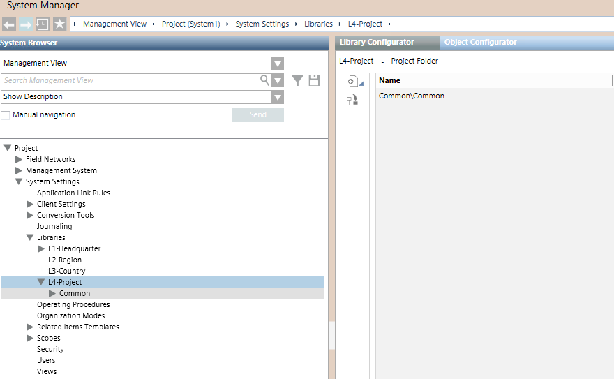

Copying Library Localization Texts from Above Customization Level
In a customized library (or library level/folder), the Copy localization from above customization level command is available for you to copy the localization texts from the first available parent level, from L3 up to L1. For example:
- Assuming an L4 library that was customized from L1, the command in L4 copies the library texts from L1 to L4
- Assuming an L3 library that was customized from L2, the command in L3 copies the library texts from L2 to L3
- Assuming library customizations in L2 and L4, the command in L4 copies the library texts from L2 to L4
The copy command is available both in the library level and folder nodes, for example L4-Project, to act on multiple libraries, and in the customized library nodes, to act on a single library only.
In any case, the copy applies to all available languages and overwrites all previous text modifications to the involved customized library or libraries.

To copy the localization texts, proceed as follows.
- You are trained and authorized to work with system libraries at the target customization level.
- System Manager is in Engineering mode.
- In System Browser, select Management View.
- Select one of the following:
Project > System Settings > Libraries > L4-Project or L3-Country or L2-Region, or
Project > System Settings > Libraries > L4-Project or L3-Country or L2-Region > [Customized Library]. - Select the Library Configurator tab.
- Select Copy localization from above customization level
 .
. - Click Yes.
- The localization texts are copied into the customized library or libraries from the first parent level available.